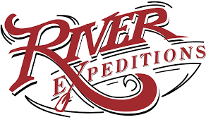

Overview
Purpose
[Our goal is to increase our revenue for "River Expeditions" by sharing the experience of white water rafting with as many people as possible. We believe that this wholesome experience combines excitement, adventure and fun and is ideal for families and friends to come together and share an uplfiting and unforgettable time with each other. This webiste therefore is a place where we inform our customers about white water rafting. They can also purchase our products here.]
Audience
[Are you looking for an incredible experience, an adventurous trip or even a short holiday? If so, look no further, because River Expeditions can deliver on all of those. Our white waters range from thrilling rides to steady streams that are ideal for younger riders or beginners. So, whether you are planning an activity for the whole family or simply wanting to experience the excitment of fast rapids and challenging slops that will make you wish you had found us sooner, NAME is the place to be. Come and check us out and see for yourself.]
Branding
Website Logo
Style Guide
Colour Palette
Palette URL:
https://coolors.co/3f3e44-d8513b-ffffff-dcdcde-959499| Primary | Secondary | Accent 1 | Accent 2 | Accent 3 |
|---|---|---|---|---|
| [#3f3e44] | [#d8513b] | [#ffffff] | [#dcdcde] | [#959499] |
Typography
Heading Font: [Rock Salt]
Paragraph Font: [Lato:ital,wght@1,300]
Normal paragraph example
The best Whitewater Rafting in Colorado, White Water Rafting Company offers rafting on the Colorado and Roaring Fork Rivers in Glenwood Springs. Since 1974, we have been family owned and operated, rafting the Shoshone section of Glenwood Canyon and beyond.
Coloured paragraph example
Trips vary from mild and great for families, to trips exclusively for physically fit and experienced rafters. No matter what type of river adventures you are seeking, White Water Rafting Company can make it happen for you.
Navigation
Site Map
Wireframes
Home